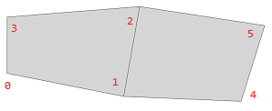

comp function
Syntax
float[] comp(component) { selector operator expression | selector operator expression ... }
string[] comp(component) { selector operator expression | selector operator expression ... }
bool[] comp(component) { selector operator expression | selector operator expression ... }
Parameters
- component, selector, operator
These parameters are the same as for the comp operation. - expression (float, string, bool)
An expression evaluated per component. All expressions must be of the same type.
Returns
An array that contains the returned values of expression for each component.
Description
Very much like the comp operation the comp function divides a shape into topological components (wrt. component, selector, operator) which result in new component shapes. But in contrast to the operation the function does not process the selected components by a sequence of shape operations. Instead a functional expression is evaluated on each selected component shape. The respective return values are organized in an ordered array which is returned as the result of the comp function. Refer to the documentation of the comp operation for details on available component selectors, selectors and operators.
The returned array has a number of properties:
- Its size is equal to the number of faces, edges, etc. for component set to f, e, etc. respectively.
- For example, for component set to f, the array contains the returned value of expression for each face: the value for face index 0 at position 0, for face index 1 at position 1, and so on.
- Evaluated expressionss of combined component shapes (operator =) are copied and inserted for each respective topological entity at the relevant index positions.
- Topological entities which are not selected by a selector are inserted with a default value (0, "", false respectively) at the relevant index positions.
The comp function allows you to gather information about the current shape and its components without changing the current shape or adding successor shapes to the shape tree.
The size of the returned array is limited. It can be configured in the Procedural Runtime preferences (Default: 100000).
Related
- comp operation
- setback operation
- size function
- Array types operators
- findFirst function
- sum function
- comp attribute
- Edge attribute functions
Explanatory examples
Vertices | Comp shape attributes
 |
const array = comp(v) { all : comp.index }
Lot --> print(array)
(6)[0, 1, 2, 3, 4, 5]
A shape is split into all of its 6 vertices. Each vertex component is asked for its component index. These values are then organized in an array in vertex index order.
|
Edges | Scope shape attributes
edgeLength = scope.sx
const array = comp(e) { border : edgeLength }
(7)[7,15,0,17,15,10,16]
In this example the shape with 7 edges is split into its 6 border edges. Each edge component is asked for its length via its scope attribute. Edge 2 is not selected but inserted in the array with a default value 0.
|
Face edges | Combine shape operator
const array = comp(fe) { front : comp.sel + comp.index |
back = str(comp.index) }
(8)[front0,,0,,,0,,front1]
The shape with 8 face edges is split into its 2 front face edges and into a combined shape consisting of 2 back face edges (operator =). For each front edge a string is constituted using comp shape attributes. The second string expression is evaluated only once but the return value is inserted at all respective back edge indices. The remaining edges are not selected but inserted with a default value (empty string "").
|
Faces | Occlusion query
const array = comp(f) { side = touches }
(6)[false,true,true,true,true,false]
The shape with 6 faces is split into one shape consisting of 4 side faces. An occlusion query is evaluated once and the result is inserted into the array for all side faces. The remaining faces are not selected but inserted with a default value (false).
|
See for example the setback operation for applications.
Copyright ©2008-2021 Esri R&D Center Zurich. All rights reserved.